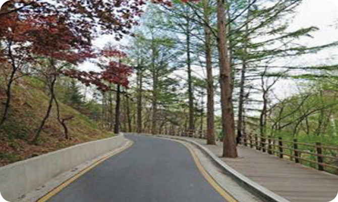
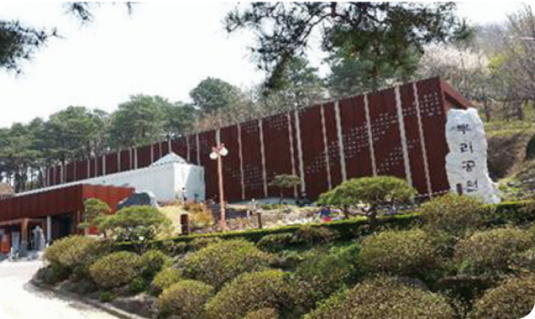

상세정보
대전 중구 보문산 자전거길
국토종주 자전거길 100선을 소개합니다
- last Updated 2024-11-30
- 도심 속 치유의 산길을 따라 공원에서 공원으로
- 한강의 물길이 서울과 만나는 경계, 구리한강시민공원은 봄에는 유채꽃 행사, 가을에는 코스모스 축제 행사가 매년 펼쳐지는 한강 명소 중의 하나이다. 왕숙천변의 자전거길은 구리시와 남양주시를 구분하는 경계이며 유네스코 세계문화유산으로 등재된 동구릉과 연계된다. 라이딩의 마무리는 구리자원회수시설 전망대에서 한강변의 노을을 감상하는 것으로 추천할 만하다


여행코스
경로와 주행거리를 확인해주세요
- 경로
- 보문산입구→청년의 광장→사정공원→대전오월드→뿌리공원
- 소요시간
- 왕복 2시간 소요
- 주행거리
- 주행거리 10km(시속 15Km 기준)
먹거리와 즐길거리
즐거운 여행 되시기를 바랍니다
- 문의전화
- 중구청 건설과 ( 042-606-6823 )
- 감상TIP
- 보문산, 사정공원
- 여행TIP
- 대전오월드, 효월드
- 먹거리
- 보리밥, 파전, 순두부
- 대중교통
- 대전역 (시내버스 802번 )
- 편의시설
- 주변 자전거 쉼터